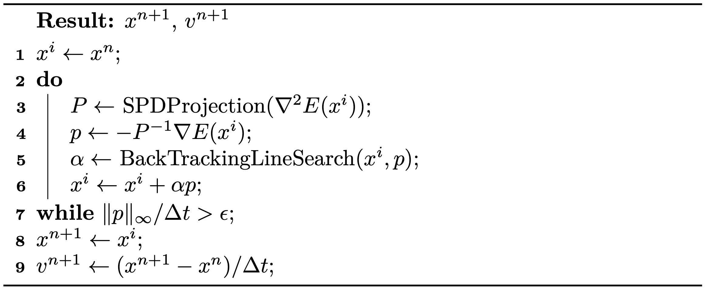

Gradient-based Optimization
The search direction of the standard Newton's method is calculated by minimizing the local quadratic approximation of the objective energy: where \(P = \nabla^2 E(x^i)\). In general gradient-based optimization methods, \(p\) can be calculated by Equation (3.3.1) with any proxy matrix \(P\). Setting \(P = I\) results in \(p = -\nabla E(x^i)\), as used in the standard gradient descent method. This approach converges more slowly than Newton's method, as the energy approximation is of a lower order. The closer the proxy matrix \(P\) is to the Hessian matrix \(\nabla^2 E(x^i)\), the faster the convergence. Hence, using an SPD approximation of the Hessian matrix as the proxy ensures that the search direction is always descent, while maintaining a convergence rate close to quadratic. This is akin to approximating non-convex energies locally using a convex energy proxy.
A straightforward method to obtain such an SPD approximation involves first projecting \(\nabla^2 E(x^i)\) onto its closest semi-definite matrix by solving and then introducing perturbations to ensure that \(P\) is invertible. The solution in this case is \(P = Q \hat{\Lambda} Q^{-1}\), where \(P = Q \Lambda Q^{-1}\) is the eigendecomposition, and if \(\Lambda_{ij} > 0\), otherwise \(\hat{\Lambda}_{ij} = 0\). Intuitively, \(P\) is obtained by zeroing out all the negative eigenvalues of \(\nabla^2 E(x^i)\).
Definition 3.3.1 (Eigendecomposition). The eigendecomposition of a square matrix \(A \in \mathbb{R}^{n \times n}\) is where \(Q = [q_1, q_2, ..., q_n]\) is composed of the eigenvectors \(q_i\) of \(A\), ; \(\Lambda = [\lambda_1, \lambda_2, ..., \lambda_n]\), with \(\lambda_1 \geq \lambda_2 \geq ..., \lambda_n\) being the eigenvalues of \(A\); and \(Aq_i = \lambda_i q_i\).
However, in simulation, \(\nabla^2 E(x^i)\) is usually a large sparse matrix, and performing eigendecomposition on it would be prohibitively expensive. Fortunately, we will discover later in this book that the Incremental Potential in solids simulation can be expressed as a separable sum of energies defined on local stencils, such as a triangle in the 2D Finite Element Method (FEM) mesh: where \(\mathbf{x}_{jk}\) are the nodes associated with the energy \(E_j\). Consequently, we can conveniently obtain a reasonably good SPD approximation by zeroing out the negative eigenvalues of each \(\nabla^2 E_i\) defined on a small number of nodes and aggregating them.
Example 3.3.1 (Local Projection Method). To simulate elasticity in 2D on a triangle mesh with 10,201 nodes and 20,000 triangles, the Hessian matrix \(\nabla^2 E(x)\) is \(20,402 \times 20,402\). For the local projection method described above, it requires 20,000 eigendecompositions on \(6 \times 6\) matrices. Considering the computational complexity of eigendecomposition on an \(n \times n\) matrix is worse than \(O(n^2)\), this rough estimation already suggests a more than \(500\times\) speedup for this medium-sized problem when employing the local projection methods.
In addition, since the mass matrix in \(\nabla^2 E(x^i)\) is Symmetric Positive Definite (SPD) and the sum of SPD matrices remains SPD, there is no need for perturbations when projecting other matrices. We now summarize the globally convergent projected Newton method for backward Euler time integration in Algorithm 3.3.1.

Remark 3.3.1 (Stopping Criteria). From Equation (3.3.1), we understand that can be interpreted as a quadratic approximation of the distance from the current estimate \(x^i\) to the optimal solution. Hence, we utilize as a more intuitive measure for the stopping criteria. This approach transforms it into a velocity unit and takes the maximum magnitude across every node.